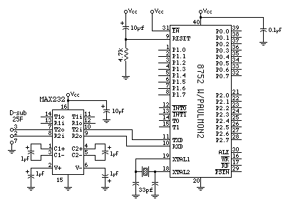

PAULMON2
PAULMON2
Hardware Requirements
Minimal System
|

|
|
Figure 1: Minimal Required System to run PAULMON2
|
The minimal required system to run PAULMON2 is shown in Figure 1.
The 8752 processor must be programmed with a copy of PAULMON2. The
only other chip required is a MAX232, to translate the +5v signals
from the 8051 to the levels used for RS-232. Of course, a +5v power
supply and a standard serial cable are required.
This system isn't very useful... you can't download programs because
there is no external RAM chip, but this system will "boot-up" and
PAULMON2 will run properly. If a programmable 8051 family chip
(8751, 87C51, 87C52, 89C51, 89C52, etc) is available,
and a prototype construction technique (wire wrap, point-to-point, etc)
is used, it is easiest to build and test this minimal
system first, and then add the external RAM and other components
after the minimal system is working.
Of course, the 8752 chip must be programmed with PAULMON2, so a
programmer which can write to the 8752 is needed to initally program it.
Useful System
To build a useful system, at least one external RAM chip is required
so that code (other than PAULMON2 itself) can be run. At least two
more chips are required, as shown here:

|
|
Figure 2: Minimal Useful System for PAULMON2
|
Because the RD pin on the 8051 (pin #17) is not used, the MOVX
instruction can not be used to read from the RAM, but MOVC will
work. However, using the PSEN line instead of RD allows code
to executed from the RAM, which is important for developing
code with PAULMON. In many systems, the RD and PSEN lines are
combined with an AND gate (74HC00) so that both MOVX and MOVC
can read from the RAM.
This schematic simply connectes the two chip select pins to the
A13 and A15 lines, which causes the 8k of memory to appear in
two locations, 0x2000 to 0x3FFF, and 0x6000 to 0x7FFF.
Because no additional I/O hardware is provided, programs written
to run on this board will only be able to do I/O using the
serial port. Most applications will require additional aditional
I/O hardware, but this minimal useful system can be used to test
simple programs which communicate via the serial port.
Compatible Processors
Nearly all 8051 compatible processors will with the PAULMON2. Many
8051 type processors contain special hardware, which PAULMON2 will
not use, but can be used by programs which are downloaded and run
using the monitor.
Serial Port Interface
The schematics above show the MAX232 chip interfacing between the
8051 and a PC's serial port. Other chips such as the 1488/1489 can
be used, but for a prototype board the "5 volt only" feature of the
MAX232 (and equivilant chips) is a good idea, since it is more difficult
to make wiring errors which can destroy the chips on the board if
only a single +5 volt power supply is used.
RAM and Memory Mapping
PAULMON2 does not require RAM to run, but programs can not be
downloaded unless RAM (or Flash ROM) is present to hold the
downloaded data. Standard versions of PAULMON2 expect ram to
located at 0x2000, 0x4000, or 0x8000. Within the PAULMON code
are LJMP instructions which cause interrupts to jump to the
associated locations in RAM (e.g. 0x0003 jumps to 0x2003 for
the INT0 interrupt). It is possible to configure PAULMON2
for RAM located in other places.
To be useful, the RAM must be connected so that it can be read
as code memory. In other words, the PSEN line must be
able to select a read from the RAM.
PAULMON2 Documentation, Paul Stoffregen
http://www.ece.orst.edu/~paul/8051-goodies/pm2_docs/hardware.html
Last updated:
Status: This page is more or less finsihed
Suggestions, comments, bug reports???
<paul@ece.orst.edu>
Return to PAULMON2 Documentation, Table of Contents